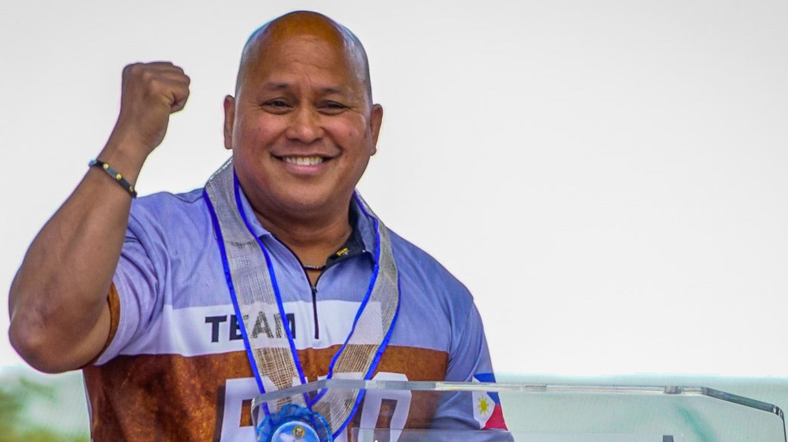
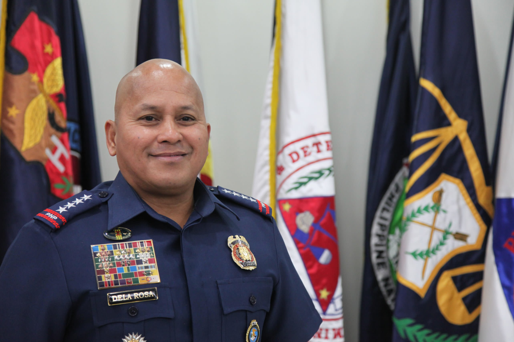

Topic 1: magaling si waky mag laro ng basketbol
Si waky ay magaling mag
baskitbul, kalaru nya si maykel jurdan at larry burd.
Si waky ay kapampangan na bisayang waray at ilunggo.
Si waky ay magaling mag
baskitbul, kalaru nya si maykel jurdan at larry burd.
Si waky ay kapampangan na bisayang waray at ilunggo.

Topic 2: Taga saan si waky, at kanyang istorya
Si waky ay napanganak sa Brgy. Pulungbulu Angeles City
Pampanga, at siya ay lumaki sa Baguio City hanggang sa edad
na 14 years old, at sa edad na 18 years old siya ay nakitaan ng potential
ni coach Jeff Napa ng National University sa paglalaro ng Baskitbul. At siya
naman ay naglaro sa Maynila ng 5 months nagseserbisyo ng residency, ngunit
siya ay pinauwi ng National University dahil na desolve ang kanyang seksyon
na naglalaman lamang ng pitong tao. Siya ay bumalik ng Baguio City upang
irepresenta uli ang University of Baguio Cardinals Men's Baskitbul tim. 0
Ngayon ay muli syang bumabalik sa kanyang kundisyon at handa para sa BBEAL Season 37!
at irerepresenta ang Unibersidad ng Baguio.